入门级手帐教程
1.手帐入坑第一步：选手帐本
俗话说，好的开始是成功的一半，同样，好看实用的手帐本是做出精美手帐的第一步。如果你是一个热爱记录生活的人，那么以下几款手账本类型是你的必备装备。
▌时间轴手账本
这类手帐本一日一页，内带时间轴，年计划表，月计划表等，可以用来记体重变化、朋友生日、月度花钱计划等，也可以用来记录自己灵光一现的简笔画和日常的细碎事情。
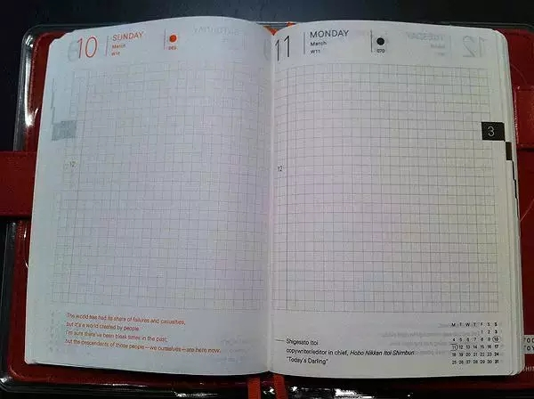▌经典活页本
与上面的手帐不同，活页手帐本外表更偏重朴实实用风，有的自带皮质封面更是分分钟让你陷入绅士贵族的幻想中。这类活页本最为重要的特点就是中间有一个十字形的车线，可以按照自己的心意更换内页，涂写属于自己的手帐。
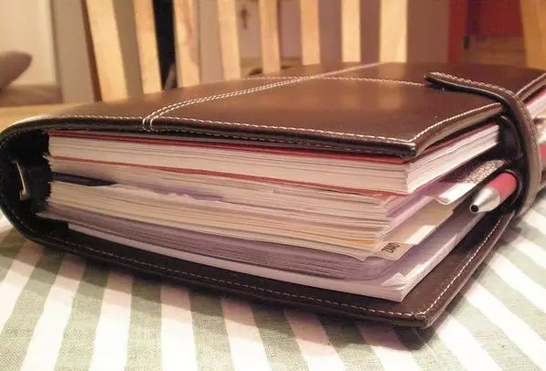▌旅行记录手帐本
护照大小的宽度，但可以同时夹好几本内芯，也可以自行购买记账本、空白页本、横线本、方格本等内芯自行mix组成一本自己独有的手帐。一般是供给旅行者用来记录旅行，每到一个国家或地区盖印章用的。当然，你得先攒够旅游的钱。
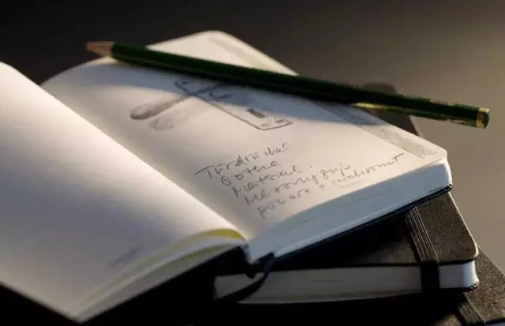2.手帐入坑第二步：选书写用具
选择完手账本的同时，再来说说它的好拍档——笔。纸与笔的高配合度，也能够为记录更添一份品质。
▌极细钢笔
手帐本材质较好，用极细钢笔写上去不仅不会晕染，而且钢笔字会给手帐带来文艺又复古的感觉。当墨水从笔尖流出，在纸上倾泻，散发出墨香，你才能体会到书写的魅力和成就感。
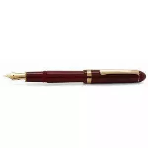▌自动铅笔
喜欢用铅笔记录手账的人可以选择笔身较为纤细，铅芯较细，手感好的自动铅笔，这样长时间使用也不会弄脏手帐本面。
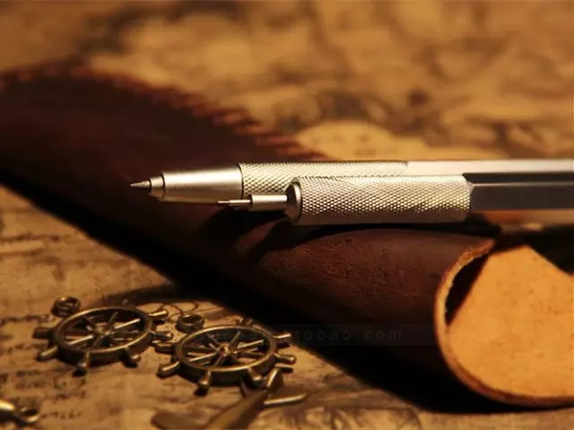▌马克笔
马克笔很适合在写手帐时的随手涂鸦哦~尤其是马克笔具有挥发性，很适合一次性快速绘图。即使没有绘画基础，也可以在写完手帐后用马克笔随手创作几个属于你的小表情。
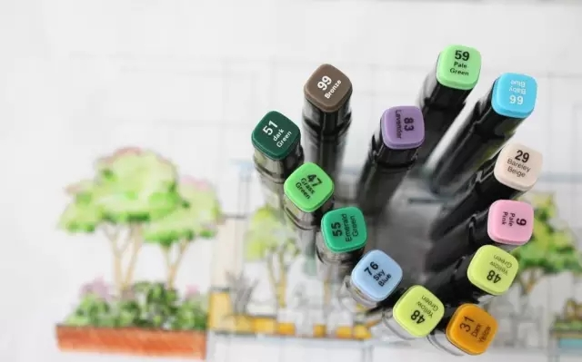3.手帐入坑第三步：选装饰品
看到第二步时，可能有人要犯愁了：没有绘画基础，怎么破？这时装饰品们就要闪亮出场，拯救你的手帐了！
▌胶带
如果不会画画，那么就向胶带求救吧。当然，这里说的胶带可不是家里捆东西的那种普通胶带，而是纸胶带。好好搭配和纸胶带，可以使手帐的美貌度和逼格提升。
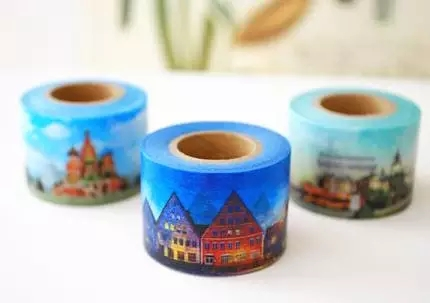▌胶带架
有了漂亮的胶带，怎么能少了充分体现X格的胶带架呢？快让这些或文艺或可爱的胶带架装饰你的生活吧~
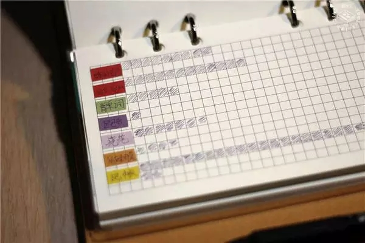▌彩色贴纸
贴纸可是手帐装饰物中的战斗机，而且作用不仅限于美化手帐，合理运用贴纸可以起到区分提醒的作用，充分提高记手帐效率。
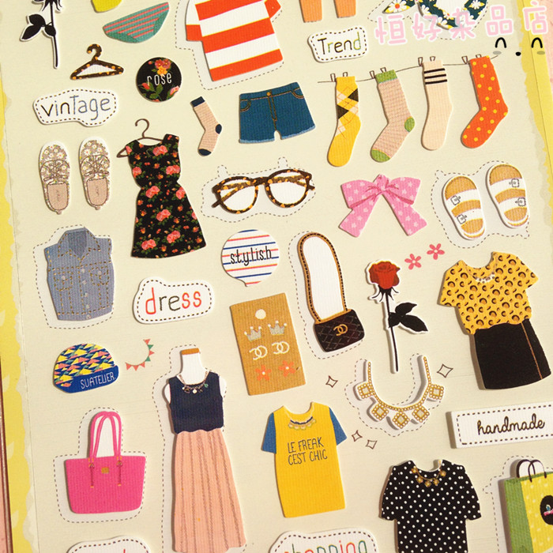▌贴纸盒
和胶带架一样，也是手帐必不可少的周边套物品，方便收集没用完的零碎贴纸。
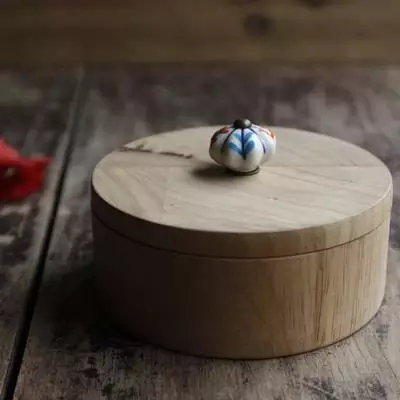▌迷你打印机
怎么把手机里的照片贴到手帐上呢？这时，你需要一台迷你打印机！占地不大，却可以使你的手帐更加丰富多彩。
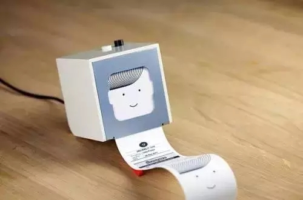